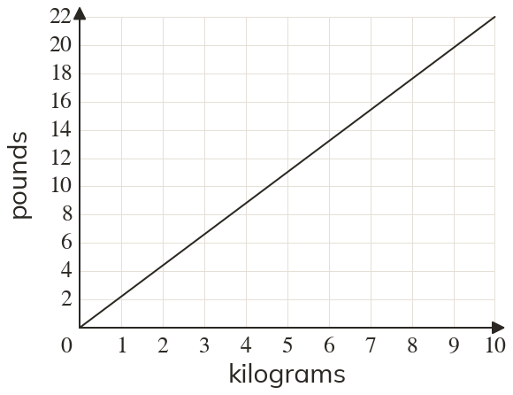

Westonbirt Maths · Distance-Time and Conversion Graphs
Conversion and Time-Series Graphs
Name: ______________________ Date: ____________
1
Use the graph to convert kg to pounds.
2
Use the graph in question to convert lb to kilograms.
3
Use the graph in question to convert kg to pounds.
4
A conversion graph for pounds (£) and dollars ($) passes through and Convert to dollars.
5
Use the graph in question to convert to pounds.
Ext
Why does a conversion graph between two units always pass through ?
